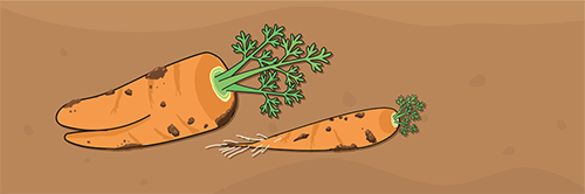
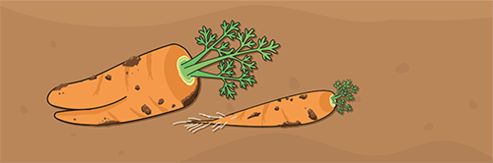

6:00~ 당근 수확과 아침 식사
아침에는 6시쯤 일어납니다. 언제까지나 이불 속에 파묻혀 있고 싶지만, 영차! 하고 힘내서 일어납니다. 밖에 나가면 먼저 해님에게 '안녕, 좋은 아침이에요.'라고 인사.
그다음 잘 여문 당근을 수확합니다. 못난이 당근은 제가 아침밥으로 먹습니다. 수확을 하면서 아침도 해결할 수 있어서 무척 효율적입니다!
아침에는 6시쯤 일어납니다. 언제까지나 이불 속에 파묻혀 있고 싶지만, 영차! 하고 힘내서 일어납니다. 밖에 나가면 먼저 해님에게 '안녕, 좋은 아침이에요.'라고 인사.
그다음 잘 여문 당근을 수확합니다. 못난이 당근은 제가 아침밥으로 먹습니다. 수확을 하면서 아침도 해결할 수 있어서 무척 효율적입니다!
아침에 캔 당근을 산지 직송 매장으로 운반합니다. 일과 중 가장 힘을 써야 하는 일이네요. 슬슬 리어카가 아니라 전기로 움직이는 차를 구입해볼까 생각하고 있어요.
당근의 상태를 보면서 물을 주거나, 벌레를 잡거나, 비닐을 씌우거나 합니다. 지금은 당근이 메인이지만, 장기적으로는 더 많은 작물을 키우고 싶어서 관련 준비도 같이 하고 있습니다.
느긋하게 목욕을 하고 잠자리에 듭니다. 이불 속은 천국입니다.